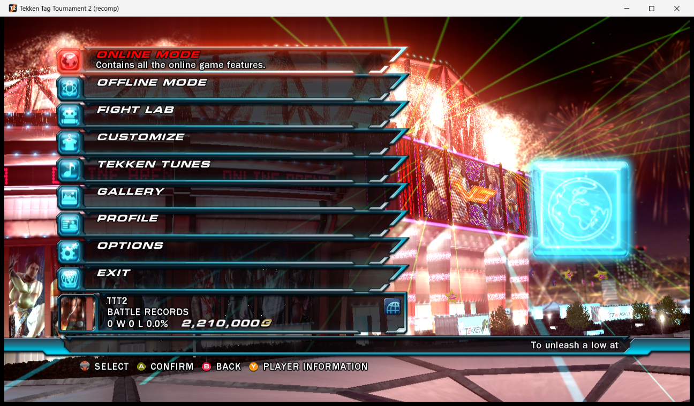
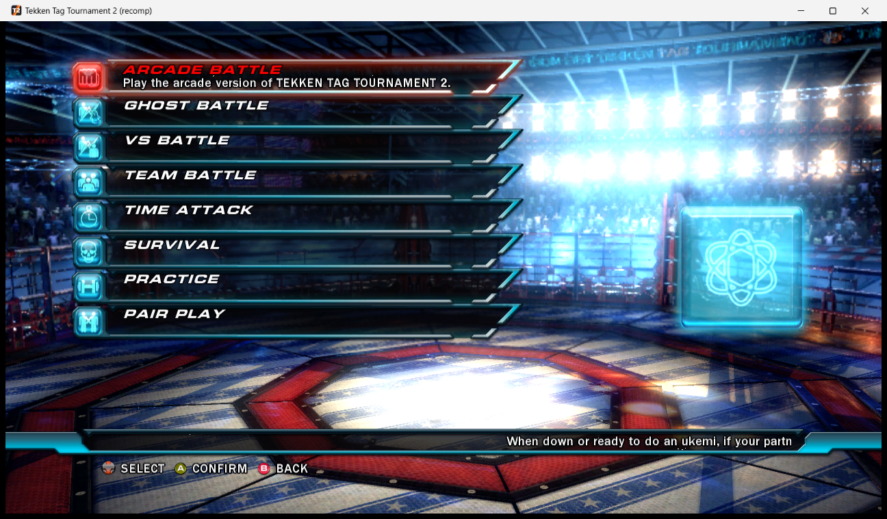
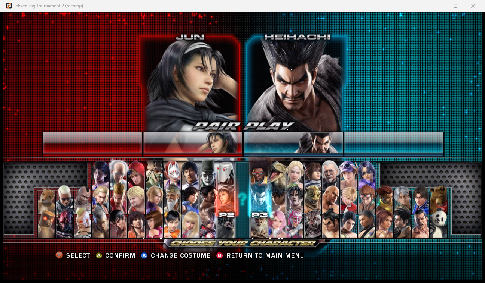
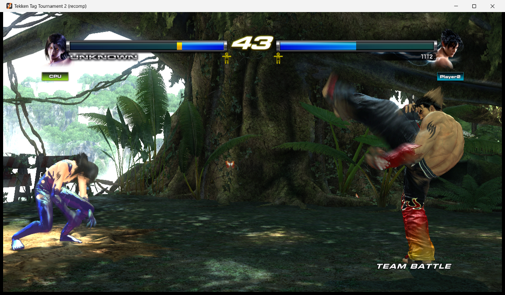
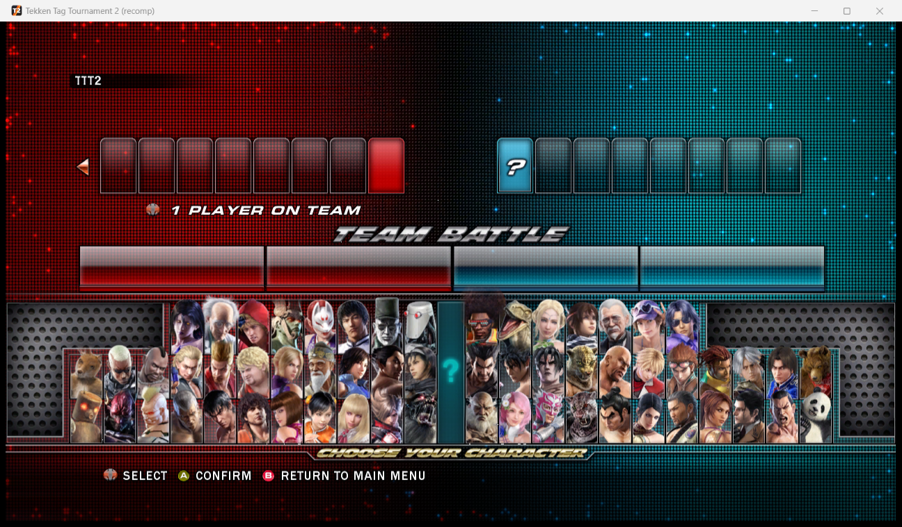

Game Install
TTT2 Local Lounge — Buyer's Step-by-Step Guide
4 phones = 4 controllers
1 laptop
TV via HDMI
Wi-Fi only when playing
Real 2v2 tag team
Follow every step in order. Total one-time setup: about 30 minutes.
What your seller sent you
You received a Google Drive folder containing 5 files. Download all of them into one folder on your laptop (for example Downloads\TTT2\):
| # | File | What it is |
|---|
| 1 | TTT2_Local_Lounge_SETUP.bat | The controller system — installs in Step 2 of this guide |
| 2 | Game Install.pdf | This guide |
| 3 | TTT2 game ISO (zip) | The game disc image, zipped — extract it in Step 3 |
| 4 | TU3 (zip) | The game's official Title Update 3, zipped — extract it in Step 3 |
| 5 | ttt2_setup.exe | The game builder — turns the ISO + TU3 into a playable PC game |
Download link from your seller: https://drive.google.com/drive/folders/1IguQQwEF0J9hfeS1gE_7qf27s999GKbj — if your seller shares a different link, use theirs.
Check before starting: Windows 10/11 64-bit · about 13 GB free disk space · any DirectX 11 graphics card (the game uses your laptop's dedicated GPU automatically).
1Run the lounge installer
1
Double-click TTT2_Local_Lounge_SETUP.bat
- The browser / Windows may warn about
.bat files — this is normal. Choose Keep / More info → Run anyway.
2
Watch it extract — it creates a TTT2_Local_Lounge folder next to itself with everything inside, then deletes itself. That is normal.
Result: a folder like Downloads\TTT2_Local_Lounge\ containing console\ and START_HERE.txt.
2Install Python (once)
3
Go to python.org/downloads, download and run the installer.
- CRITICAL: on the first screen, tick “Add python.exe to PATH” — without it nothing works.
- Click Install Now, wait for “Setup was successful”.
3Extract the game files, then build the game
Step 3a — Extract the two zips (once)
4
In your download folder, right-click the game ISO zip and choose Extract All… → Extract.
5
Do the same for the TU3 zip.
Remember the two extracted locations — for example
Downloads\TTT2\TTT2_game_iso\ (contains the .iso)
and Downloads\TTT2\TU3\. The builder will ask for them next.
Google Drive sometimes zips files when you download a whole folder — if you downloaded one big zip, extract that first and you'll find the ISO zip and TU3 zip inside.
Step 3b — Build the game with ttt2_setup.exe
6
Double-click ttt2_setup.exe
- Windows may say “Windows protected your PC” — the builder isn't code-signed. Click More info → Run anyway.
- Windows asks for admin permission — click Yes.
7
Give it the two locations you extracted:
- When asked for the disc image: browse to the extracted ISO folder and select the .iso file (Tekken Tag Tournament 2 (USA, Europe)).
- When asked for the update: browse to the extracted TU3 folder (or TU3 file) and select it.
- Choose an install location with at least 13 GB free.
8
Wait for it to build — it checks your files, builds the PC version and prepares the game's shaders. Usually a few minutes.
Result: Tekken Tag Tournament 2 appears in your Start menu / Desktop, and you know the folder of the game's .exe — you'll need it in Step 4.
Legal note: the art, sound, stages and movies are built on your PC from your disc image. Nothing copyrighted is included in the files your seller shares.
4Run the automatic setup
7
Open TTT2_Local_Lounge\console\ and double-click INSTALL.bat — it does everything in 5 steps:
| Setup step | What happens / what you do |
|---|
| 1/5 Python | Detects Python. If missing, it opens the download page — install with “Add to PATH”, then run INSTALL.bat again. |
| 2/5 Libraries | Downloads the server libraries automatically (needs internet this one time). |
| 3/5 Controller driver | Downloads and installs the ViGEm Bus driver. Windows asks for permission — click Yes. |
| 4/5 Game path | It asks: “DRAG your Tekken Tag Tournament 2 .exe into this window” — drag the game's .exe (from Step 3's install folder) into the black window and press Enter. (No game yet? Type S and Enter — run INSTALL.bat again later.) |
| 5/5 Verification | Checks everything and prints SETUP COMPLETE! |
If anything ever breaks later: run INSTALL.bat again — it repairs libraries, driver and game path in one go.
5Activate your license (once, forever)
8
Double-click console\start_server.bat. The dashboard opens in your browser showing a lock screen.
9
The lock screen shows a “laptop fingerprint” — a code like 9F3E-E2FB-EA8F-6C53.
Send that code to your seller (a WhatsApp photo is fine).
10
Your seller sends back a key like TTT2-XXXXXXXX-XXXXXXXX.
Type it in the LICENSE KEY box and press Activate.
Unlocked! The full dashboard appears. This key works on this laptop only, forever — you never need it again.
Keep the black server window open while you play — closing it turns off the controllers.
6Connect the phones
1
Every phone joins the same Wi-Fi as the laptop.
2
On each phone's browser open its player link (printed on the dashboard and in the server window):
| Phone | Open | Plays |
|---|
| Phone 1 | http://LAPTOP-IP:8000/player1 | RED team |
| Phone 2 | http://LAPTOP-IP:8000/player2 | RED team |
| Phone 3 | http://LAPTOP-IP:8000/player3 | BLUE team |
| Phone 4 | http://LAPTOP-IP:8000/player4 | BLUE team |
Faster: open
http://LAPTOP-IP:8000 on one phone and scan the
QR codes on the dashboard.
3
On each phone: rotate to landscape, tap fullscreen.
The dashboard should show all four cards as ● connected.
Customize buttons: press ✏️ on a phone to open the layout editor — drag, resize, save. Layouts auto-save per phone.
The controller
| Control | In menus | In fight |
|---|
| D-PAD / NUB | move the cursor | move / crouch / jump |
| A | confirm / OK | left punch |
| B | back / cancel | right punch |
| X | — | left kick |
| Y | — | right kick |
| LB / RB | — | TAG — bring your partner in! |
| START | join / pause | pause |
| BACK | select / random team | — |
Golden rule — who is Player 1? Controllers are claimed in first-press order. Whoever presses a button first becomes Player 1, the next press Player 2, and so on. So P1 presses START first at the title screen, then the others in order.
7How to play — the 4-player 2v2 (PAIR PLAY)
1
On the dashboard press Start game — Tekken opens on the TV (HDMI).
2
Title screen: Player 1 presses START on their phone. If an auto-save notice appears, P1 presses A.

The main menu
3
Select OFFLINE MODE (press A), move down to the last row, PAIR PLAY, press A.

OFFLINE MODE → PAIR PLAY (last row)
4
The stones screen. Four stones: two red (left), two blue (right).
Each player joins one at a time, in player order:
| Order | Each player does |
|---|
| P1 | Press START → move LEFT/RIGHT onto a red stone → A → a dialog appears (“Exiting player select. Continue anyway?”) — press A (OK) to advance. This dialog is normal! |
| P2 | Press START → the other red stone → A → A on the dialog |
| P3 | Press START → a blue stone → A → A on the dialog |
| P4 | Press START → the last blue stone → A → A on the dialog |

All four seated — RED team: P1 + P2 · BLUE team: P3 + P4
5
Character select: press A to leave the stones. One picker per side drives the selection: P2 picks for red, P3 picks for blue (portraits update live). Confirm both fighters — the match begins!

PAIR PLAY character select
6
Fight! The active fighter battles while the partner waits. Press LB or RB (TAG) to swap your teammate in — tag combos, walls, rage: everything like the console version.

Live 2v2 tag action
7
After a match: follow the on-screen prompts (A = continue / rematch). To leave PAIR PLAY: a picker pad presses B, then A to confirm.
8Other game modes
VS BATTLE — classic 1v1
- Main menu → OFFLINE MODE → VS BATTLE
- P1 and P2 each pick a character → fight
TEAM BATTLE — up to 8 characters per team
- Main menu → OFFLINE MODE → TEAM BATTLE
- P1 presses START and sits on red (one human per side here — the other side is CPU)
- On the team-size row press LEFT/RIGHT to set 1–8 characters per team, then A
- Pick your team and fight the elimination. BACK = random team for instant fun.

TEAM BATTLE — “2 PLAYERS ON TEAM” set with LEFT/RIGHT
Single-player
ARCADE, GHOST, TIME ATTACK, SURVIVAL, PRACTICE, FIGHT LAB — all fully playable with P1's phone.
9Troubleshooting
| Problem | Fix |
|---|
| Browser blocks the .bat or ttt2_setup | Choose Keep, or More info → Run anyway — they are safe |
| Phone page won't load | Run start_server.bat; check laptop + phones on the same Wi-Fi |
| Dashboard says “LICENSE REQUIRED” | Send the laptop fingerprint to your seller, enter the key you receive |
| “denied: slot in use” on a phone | Another tab owns that slot — close it, reopen the link |
| A button stuck in-game | The phone dropped while held — reopen the player link; the server auto-releases |
| P2/P3/P4 don't respond in menus | Pads claim in first-press order — P1 presses START first at the title |
| The keyboard types into the game | The laptop keyboard is merged into Player 1 — don't type while playing |
| INSTALL.bat fails at libraries | Check internet once, rerun INSTALL.bat |
| Game doesn't start from the dashboard | Run INSTALL.bat again and re-drag the game's .exe (it remembers the new path) |
| ttt2_setup says the ISO/TU3 is wrong | Use the exact disc image Tekken Tag Tournament 2 (USA, Europe) + its Title Update 3 |
Have fun — and tag often! 🥊